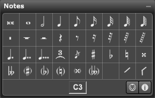

Palette Overview

The following describes each of the tools in the Notes palette:
- Notes: Select one of these tools to insert a note of that value. The palette contains (from left to right): double whole note, whole note, half note, quarter note, 8th note, 16th note, 32nd note, 64th note, 128th note.
- Rests: Select one of these tools to insert a rest of that value. The palette contains (from left to right): double whole rest, whole rest, half rest, quarter rest, 8th rest, 16th rest, 32nd rest, 64th rest, 128th rest.
- Accidentals: Select one of these tools to insert an accidental. The palette contains (from left to right): sharp, flat, natural, double sharp, double flat, courtesy sharp, courtesy flat, courtesy natural, courtesy double sharp, courtesy double flat.
- Ctrl[Cmd]-click a note with an Accidental tool to apply that accidental to all notes of the same pitch for the remainder of the measure.
- Augmentation Dots: Select one of the three augmentation dot tools to turn the selected note or rest tool into a dotted note or rest.
- Tuplet: Use this tool to turn the selected note or rest tool into a tuplet whose value was last defined in the Tuplets dialog box. The default tuplet value is a triplet. We discuss the Tuplets dialog box in Group>Tuplet.
- Grace Note: Use this tool to insert a grace note into your score. See Grace Notes for more information.
For more information, see:
Using the Notes Palette
Grace Notes
Cautionary Accidents
Changing Existing Notes Values